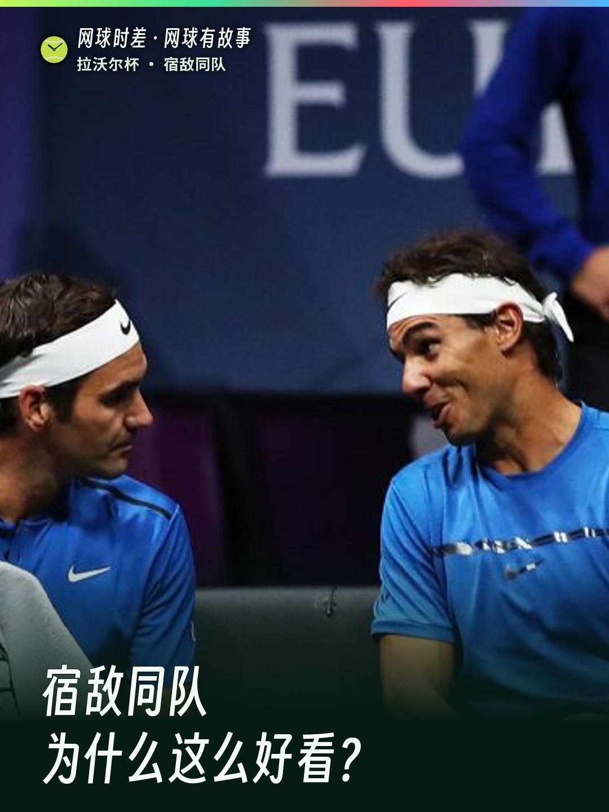

<div style="background-color:#f6f7f4;color:#17251f;padding:12px 10px;font-family:-apple-system,BlinkMacSystemFont,Segoe UI,sans-serif">
<div style="max-width:680px;margin:0 auto;background-color:#ffffff;border-top:5px solid #ff2442;padding:18px 0 22px">
<div style="padding:0 16px"><div style="display:inline-block;background-color:#e7f5ea;color:#087747;font-size:12px;font-weight:bold;padding:4px 8px;border-radius:4px">网球有故事</div>
<div style="font-size:23px;line-height:1.38;font-weight:800;color:#102d23;margin:10px 0 4px">9.22 网球有故事 | 费德勒的拉沃尔杯</div>
<div style="color:#7a8580;font-size:12px;margin:0 0 14px">☝️ 标题，长按这一行即可复制</div></div>
<div style="text-align:center;margin:0 0 16px;padding:0 16px"><a href="poster.jpg" style="color:#087747;font-size:13px;text-decoration:none">封面没显示？点此打开原图</a></div>
<div style="padding:0 16px">
<div style="font-size:15px;line-height:1.8;color:#25342e;margin:0 0 14px">从名字的由来与首届历史，到费纳同队和三天计分，一次看懂拉沃尔杯。</div>
<div style="color:#7a8580;font-size:12px;margin:0 0 8px">👇 正文全文如下，长按整段即可复制</div>
<div style="font-size:15px;line-height:1.85;white-space:pre-wrap;word-break:break-word;margin:0 0 4px">费德勒参与创办的比赛，为什么叫“拉沃尔杯”？🎾

答案藏在名字里：它向澳大利亚传奇罗德·拉沃尔致敬。这位前辈在1962年、1969年两次包揽同一年的四大满贯男单冠军。费德勒提出构想，TEAM8等合作方推动落地，借鉴高尔夫莱德杯的团队对抗，2017年在布拉格办出首届。

最让人上头的，是那些平时研究怎样打败彼此的人，有一个周末，要一起研究怎样赢。

🤝 2017年，费德勒和纳达尔站在球网同一边，连抢打同一个高压球都成了名场面。2022年，费德勒职业生涯最后一战，搭档仍是纳达尔。

但它不只有情怀，赛制也把悬念留给最后一天👇
🔵 欧洲队对阵世界队，每队6名正选。
🧮 周五每胜1分、周六2分、周日3分，先到至少13分夺冠。前两天全部赢下来也只有12分！
🔥 2022年世界队带着4:8进入周日，连赢三场，13:8翻盘夺冠；2024年欧洲队同样从周日前4:8落后逆袭，最终13:11夺杯。

它不提供ATP排名积分，个人比赛结果却计入官方战绩。“没有积分”和“只是表演赛”，不是一回事。

截至2025年共办了8届，2020年未举办；欧洲队5冠、世界队3冠。不过最近4届，世界队赢了3届，别再只凭早年的印象判断强弱。

📍 2026年第9届：9月25—27日，伦敦The O2。诺阿带领欧洲队，阿加西带领世界队。名单截至9月21日：谢尔顿退出，中岛布兰登入替。

⏰ 北京时间：9月25、26日20:00日场，夜场均为次日02:00；9月27日19:00周日决战。

你最想让哪两位宿敌，站在球网同一边？

#网球时差 #拉沃尔杯 #LaverCup #费德勒 #纳达尔</div>
</div>

<div style="padding:0 16px">
<div style="border-top:1px solid #e6ebe8;margin:18px 0 12px"></div>
<a href="https://github.com/robertyang87/tennislive/releases/download/reel-laver-cup-history-2026/laver-cup-history-2026.mp4" style="display:block;background-color:#102d23;color:#ffffff;text-align:center;text-decoration:none;font-weight:bold;padding:13px 16px;border-radius:6px;margin:0 0 7px">▶ 打开竖版成片</a>
<a href="https://robertyang87.github.io/tennislive/output/2026-09-22/reel/laver-cup-history-2026/copy.html" style="display:block;background-color:#ff2442;color:#ffffff;text-align:center;text-decoration:none;font-weight:bold;padding:13px 16px;border-radius:6px;margin:0 0 7px">分别复制标题 / 正文</a>
<div style="text-align:center;color:#7a8580;font-size:12px">图片长按保存</div>
</div></div></div>